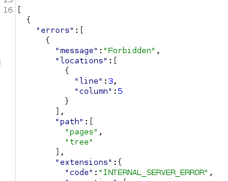

jku parameter injection
jku parameter injectionIn the JWT header, developers can also use the jku parameter to specify the JSON Web Key Set URL. This parameter indicates where the application can find the JSON Web Key (JWK) used to verify the signature – basically the public key in JSON format.
To illustrate, let’s take the following JWT that uses the jku parameter to specify the public key:
{
"alg": "RS256",
"typ": "JWT",
"jku":"https://example.com/key.json"
}.
{
"name": "John Doe",
"user_name": "john.doe",
"is_admin": false
} ▪
https://base64.guru/standards/base64url/encode ▪
https://base64.guru/standards/base64url/decodeThe parameter
is NOT vulnerable if the crafted response give us something like this
The specified key.json file might look something like:
{
"kty": "RSA",
"n": "-4KIwb83vQMH0YrzE44HppWvyNYmyuznuZPKWFt3e0xmdi-WcgiQZ1TC...RMxYC9lr4ZDp-M0",
"e": "AQAB"
}The application verifies the signature using the JSON Web Key retrieved based on the jku header value:
Now for the attack. An attacker can change the jku parameter value to point to their own JWK instead of the valid one. If accepted, this allows the attacker to sign malicious tokens using their own private key. After the malicious token is sent, the application will fetch the attacker’s JWK and use it to verify the signature:
To prevent such attacks, applications typically use URL filtering. Unfortunately, there are ways for attackers to bypass such filtering, including:
• Using https://trusted (for example https://trusted@attacker.com/key.json), if the application checks for URLs starting with trusted
• Using URL fragments with the # character
• Using the DNS naming hierarchy
• Chaining with an open redirect
• Chaining with a header Injection
• Chaining with SSRF
For this reason, it is very important for the application to whitelist permitted hosts and have correct URL filtering in place. Beyond that, the application must not have other vulnerabilities that an attacker might chain to bypass URL filtering.
Bibliography:
https://www.invicti.com/blog/web-security/json-web-token-jwt-attacks-vulnerabilities/